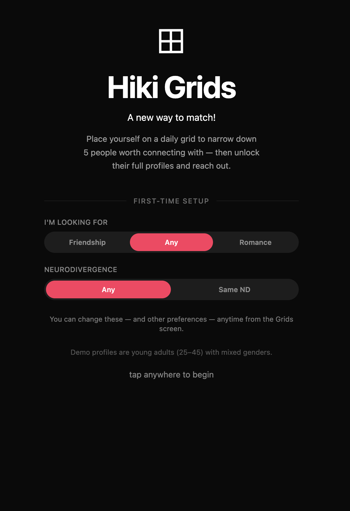
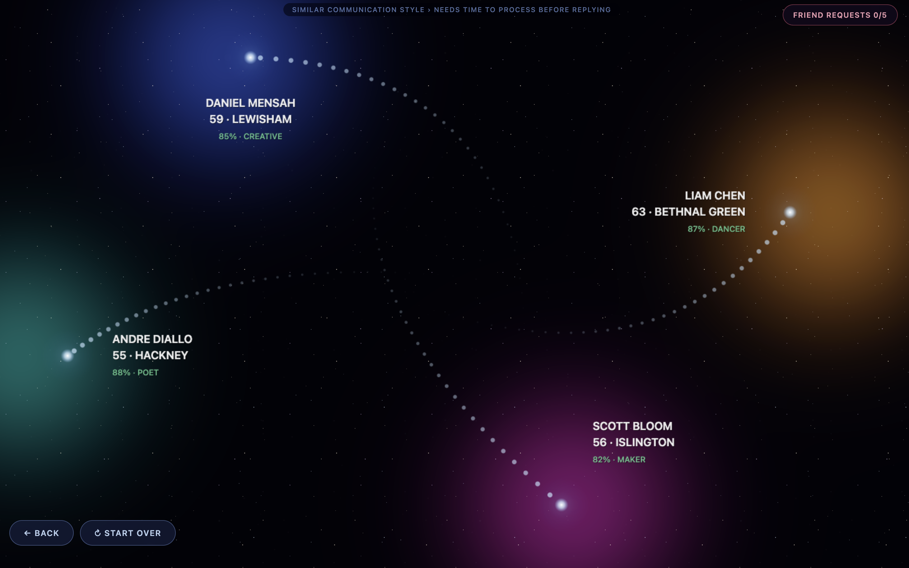

Advanced Human-Centered Design: Semester Project
Project HIKI : Reimagining Matching
Team: Jamie Paik, Sam Bingham, Lauren Lambrecht | Methods: User Research, Liberatory Design, Rapid Prototyping, Iterative Testing

Project HIKI is a semester-long Human-Centered Design project that rethinks how neurodivergent people find authentic connection online. Working within a liberatory design framework, our team researched, prototyped, and tested our way to Hiki Grids: a daily grid-based matching feature that replaces the swipe entirely.

The Problem Space
Dating apps feel like a marketplace.
When we interviewed neurodivergent users about their experience with dating and friendship apps, one insight kept resurfacing: the profile-building process felt dehumanizing. Users described themselves as "commodifying myself," "curating myself," and "rendering myself purchasable for other people." The swipe model: infinitely scrolling through faces and curated bios: created overstimulation and a sense that real personality was flattened into a product listing.
At the same time, neurodivergent users told us they form the best connections through shared interests and repeated, low-stakes exposure: more like how friendships happen in real life, less like a marketplace transaction. The apps weren't just aesthetically off; their core mechanics were structurally wrong for these users.
Who We Designed For
Jamie is 20 years old, diagnosed with ADHD, and identifies as gay. He has used multiple dating apps but hates setting up a profile because it feels like he is trying to commodify himself: rendering himself purchasable for others. Jamie needs his self-presentation and interactions online to feel authentic. He wants dating online to feel less like a marketplace and more reflective of how people make new connections in real life, where spontaneity and curiosity begin a relationship.
Working within a liberatory design framework pushed us to stay accountable to Jamie as a real person rather than a user archetype. Neutralizing diagnostic language and reframing the problem around friendship rather than disability were not small tweaks: they changed the premise of the design.
Research & Insights
We used a Say/Think/Do/Feel framework to synthesize our interviews into patterns:
- "I don't like setting up the profile": the onboarding itself is the problem
- "I'm not just queer, it's one part of me": labels flatten identity
- "It always feels like a very permanent decision that I send a like or heart": the swipe carries too much weight
- Users avoid apps entirely out of fear of harassment or overstimulation
- The easiest friendships form young, before neurodivergent traits become social barriers: which means adult apps have to work harder to recreate that low-stakes environment
Ideation
We ran a full HMW (How Might We) ideation session across four categories: eliminating profile setup, making matching more spontaneous, making the experience feel safer, and connecting people through interests rather than appearances. From over 50 ideas across the boards, two directions rose to the top:
Infinite Zoom
An aesthetic overhaul of matching: profiles nested inside each other like infinite zoom art, revealing more detail the deeper you go.
Hiki Grids
A 2-by-2 grid where users place themselves based on a daily prompt: a fundamental deconstruction of the swipe.

Testing & Iteration
We built low-fidelity prototypes of both concepts and tested them with four users: Jamie, April, Cary, and Sheila. Three key insights shaped our final direction:
"The Infinite Zoom feels like an aesthetic revolution of matching while Hiki Grids seems more of a fundamental deconstruction of the swipe." Users wanted the latter: not a reskin, but a different premise entirely. It felt like "seeing the back door of the algorithm."
Users seeking friendship versus romance had meaningfully different needs: some wanted similar people, others wanted opposites. The grid gave users agency in that choice in a way the swipe never could.
"The swipe mechanism is old and repetitive." Daily prompts felt fun and fresh. Tracing someone's answers day by day felt closer to actually getting to know a person: like a continued conversation in the real world.
Final Design: Hiki Grids
Hiki Grids replaces the matching tab entirely. Each day, users are presented with a new prompt and a 2x2 grid. They place themselves on the grid based on their answer. The app then shows a plane of other users and where they placed themselves: so instead of swiping through faces one by one, you see a spatial map of how people answered the same question. Users who intrigue you unlock their icon profile (no photos, no label-heavy bios) so you can reach out.
Everyone is pre-filtered by age, location, sexual orientation, and intention (friendship vs romance). These settings can be changed at any time from the Grids screen.

Try the Hiki Grids prototype Try the Infinite Zoom prototype View final presentation
Anti-Commodification: you see a plane of people and their answer relative to yours, not a one-by-one queue.
Encourages Curiosity: you learn about a person bit by bit each day, like having a continued conversation in the real world.
Diminishes Labels: no photos or distinct identity labels from the start. You match based on curiosity about their answers.
Intentions Are Valued: age, location, sexuality, neurodivergent preferences, and friendship vs romance are respected from day one.
Lingering Questions
Our final testing round surfaced three open threads worth pursuing:
- Age + intention matters. Older users want more intentionality in their search: Hiki Grids may be most resonant with younger populations.
- Curiosity beyond the grid. Users wanted to know why someone placed themselves where they did: a short optional explanation field could deepen the connection.
- "Living, breathing app." Keeping the grids visible after matching: like a living timeline of how your connection developed: could make the app feel more like a relationship than a marketplace.
What I Took Away
This project changed how I think about design accountability. Working within a liberatory design framework meant I had a real person: Jamie: to be accountable to, which sharpened every decision rather than limiting scope. I used to think designing for a specific community meant narrowing the design. Now I think it sharpens every decision because you have someone real to answer to.
I also grew in my ability to hold aesthetics and ethics at the same time: not as separate concerns, but as the same concern. And perhaps most importantly: accessibility is not a layer you add at the end. It is a structural decision that shapes the matching logic from the ground up.